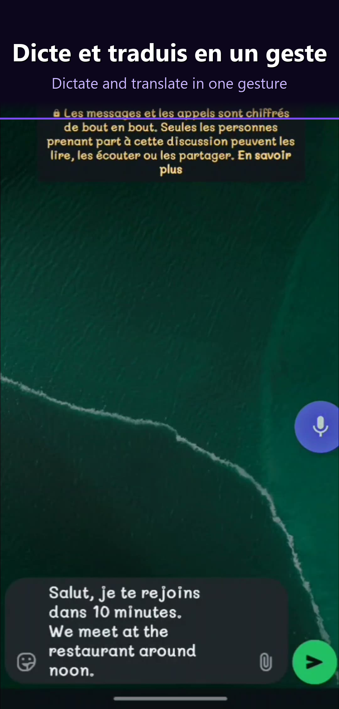

7 Best Floating Voice Bubble Apps for Android in 2026 (Compared)
Typing on a phone is slow. In a peer-reviewed study, speech input was about three times faster than a phone keyboard. Dictation closes that gap, but traditional voice keyboards force you to open the keyboard, find the mic button, wait for initialization, then speak. That's four steps too many when you're walking, driving hands-free, or trying to answer a Slack thread mid-conversation.
A floating voice bubble collapses that into one tap. It hovers above most apps on your screen, waiting. Tap it, speak, and the transcribed (and optionally translated) text lands directly inside the field you were looking at. No app switching. No keyboard dance. No breaking your flow.
This guide compares the 7 most popular floating voice bubble apps on Android on what you can check for yourself: how the bubble works, whether it inserts text where you type, language coverage, translation, customization and price. We did not run a lab benchmark, so you will not find invented error rates or latency figures here.
Here is how they compare.
Why a floating voice bubble changes everything
Ask anyone what they hate about mobile messaging, and the answer lands in the same place: typing. You tap one thumb on a six-inch slab of glass to produce prose meant for paragraphs. Autocorrect fights you. Your hands are full. Your eyes are elsewhere. Even fast mobile typists are far slower on glass than they are when speaking.
Voice dictation should have solved this a decade ago. It didn't, because of friction. Open app. Open keyboard. Find the mic icon. Wait half a second. Speak. Wait again. Review. Fix the errors. That stack of micro-frictions is why most people still type — the voice path is faster in theory but slower in practice.
A floating voice bubble removes every step except one. It's a persistent overlay — a small, draggable microphone button that lives above most apps on your phone. You never open it. You never navigate to it. You just tap, speak, and the text appears in the currently focused field. It's the closest thing Android has to a hardware dictation key.
This matters in three concrete cases. First, multi-app workflows: you're referencing a PDF in one window and replying in another, and switching keyboards kills context. Second, hands-busy moments: cooking, changing a baby, walking a dog, driving through a navigation prompt — the bubble lets you dictate without opening anything. Third, translation mid-conversation: with the right bubble app, you speak in French and the person on the other end receives English, without either of you touching a translate button.
The category is still young. In 2026 there are maybe a dozen serious players, and only a handful actually work the way the marketing suggests. This article separates them.
Try DictoKey free →What to look for in a floating voice bubble app (2026)
Not every so-called "floating mic" qualifies. Here are the eight criteria that actually matter.
1. Accuracy
The metric that matters most long-term. A bubble that mistranscribes one word in ten forces you to fix more than you save. Accuracy depends on your voice, accent, microphone and background noise, so the best test is your own: dictate the same paragraph in two apps and compare.
2. Latency (end-to-end)
The perceived speed from "I stopped speaking" to "text appeared". A short wait feels instant; a long one breaks your flow. Cloud apps also depend on your connection, so try them on your own network.
3. Language coverage
How many source languages the app recognizes. Single-language apps (English-only) are surprisingly common. Multilingual apps range from 3 (Otter) to 300+ (Gboard voice). For most users, 20-50 well-supported languages matters more than a headline number of 200 poorly-supported ones.
4. Translation
A growing subcategory: dictate in language A, output in language B. This is where bubbles genuinely surpass keyboards — you can speak in your native tongue and the message arrives in the recipient's language. Very few apps offer this; most that do require an active internet connection.
5. Customization (position, size, opacity)
You're going to look at this bubble for hours. Drag anywhere, resize, set a per-app opacity, hide it during full-screen video — these aren't nice-to-haves, they're the difference between an app you keep and one you uninstall in a week.
6. Privacy
Voice is uniquely sensitive. Check three things: where is audio processed, is raw audio persisted, and is the company based in a jurisdiction with meaningful data protection (GDPR, etc.). "We don't train on your data" is common marketing; audit the privacy policy for retention windows.
7. Price
Free tier vs. paid tier vs. freemium traps. The market has settled around two models: ad-supported free (Speechnotes), and a free daily cap plus a monthly subscription ($5-10). Free-forever-no-catch is rare in 2026 once you need translation or cloud AI.
8. Bubble persistence
The most overlooked criterion. Does the bubble survive when you rotate the screen, open a full-screen app, unlock after a reboot, or leave the phone idle for an hour? Poorly-built bubbles vanish after Android kills the background service, forcing you to reopen the app to summon it. The best apps pair a foreground service with proper battery-optimization handling.
These eight criteria structure the comparison below.
How we compared
We believe in transparency. Here is exactly what this comparison is based on, and what it is not.
What we looked at
- How the bubble works: a true text-insertion bubble, an accessibility overlay, a shortcut toolbox, or a launcher for the app's own notepad.
- Text insertion: does dictated text land in the field you are typing in, or do you have to copy and paste it?
- Languages and translation: the language counts advertised by each publisher, and whether translation happens inline.
- Customization and price: position, size and opacity options, free tier limits and paid plans.
What we did not do
We did not run a controlled accuracy or latency benchmark, and no independent benchmark compares these apps on the same audio. Speed and accuracy depend on your voice, your phone and your connection, so try two apps side by side with the same paragraph. Our speed test guide gives a simple protocol.
We build DictoKey, so take our #1 ranking with that context — and check the criteria that matter to you.

The 7 best floating voice bubble apps for Android in 2026
Here's the headline comparison before we dive into each app individually. Language counts and prices are those advertised by each publisher; the last column is our editorial verdict, not a measured score.
| App | Price | Inserts text where you type | Translation | Languages | Best for |
|---|---|---|---|---|---|
| 1. DictoKey | Free (30/day) / about $5/mo | Yes (+ keyboard) | 51 lang | 51 | Best overall |
| 2. Voice Access | Free | Yes | No | ~10 | Accessibility |
| 3. Floating Mic | Free (open-source) | Yes (or clipboard) | No | System (varies) | Open-source minimalists |
| 4. AssistiveTouch variants | Free / ads | Clipboard | No | N/A | Shortcut menus |
| 5. Speechnotes floating | Free / $1.99 | No (own notepad) | No | 60+ | Speechnotes users |
| 6. Otter.ai mobile | Free / $16.99/mo | No | No | 3 | Meetings |
| 7. Wispr Flow | Free (Early Access) | Yes | No | 100+ | English long-form |
Detailed reviews
Here's the full breakdown of each app — what it does well, where it falls short, and who should use it.
1. DictoKey — Best Overall Floating Voice Bubble
DictoKey
DictoKey is what a floating voice bubble is supposed to feel like. It's a draggable microphone overlay that sits above most apps on your phone. Tap once — the bubble pulses, you speak, and transcribed (and optionally translated) text lands in the field you were looking at. No app switching, no keyboard toggle. You can adjust its size and opacity, anchor its position, and turn it on or off app by app.
Under the hood, DictoKey uses cloud AI speech recognition, so an internet connection is needed. Its Clean mode restores punctuation and capitalization automatically, so a dictated message rarely needs retouching. The bubble coexists with TalkBack, and DictoKey also works as a standard Android keyboard: if one isn't available, the other still works.
The killer feature is inline translation across 51 languages. Speak in Spanish, get English text. Speak in French, get Indonesian. Set a target language once and every dictation arrives pre-translated in the destination field — in most apps, such as WhatsApp, Gmail, Slack and Chrome. An Interpreter Mode handles live two-way conversations.
Privacy-wise, DictoKey is GDPR compliant, stores no recordings and shows no ads. Its Accessibility permission is used only to show the bubble and insert dictated text, and sensitive apps such as banking apps, password managers and crypto wallets are blocked automatically.
Pricing: free tier with 30 dictations/day (generous for casual users), no account needed. Premium costs about $5/month or €34.99/year, with a 7-day free trial on both plans for new subscribers.
Honest limitations
- Android only. No iOS version. If you need cross-platform, DictoKey isn't it.
- Voice correction requires the keyboard, not the bubble. You can say "replace X with Y" inside the DictoKey keyboard, but the floating bubble itself currently focuses on insertion, not mid-text editing.
- Internet required. Speech recognition runs in the cloud, so a slow connection means a slower result.
2. Voice Access (Google) — Best Accessibility-First
Voice Access
Voice Access is Google's built-in accessibility app for hands-free Android control. It's not a traditional floating bubble, but it does overlay voice controls on top of any app and can insert dictated text into focused fields. Built for users with motor impairments, it takes a more comprehensive (and heavier) approach than a minimal bubble.
When active, Voice Access numbers every tappable element on screen. You say "tap 5" or "open WhatsApp" or simply dictate into a focused field. The accuracy is solid for English, leveraging Google's on-device and cloud hybrid speech stack.
Strengths: free, deeply integrated into Android, works offline for core commands, excellent accessibility pedigree, and benefits from Google's enormous speech training data.
Weaknesses: no translation, only about 10 supported languages, and the full-screen overlay can feel invasive when you just want a quick tap-to-dictate. It's designed for users who need it medically, not casual dictation.
3. Floating Mic — Best Open-Source Minimalist
Floating Mic
Floating Mic is the open-source, minimalist option. It's a small community-maintained app (available on F-Droid and the Play Store) that draws a draggable microphone overlay and hands audio off to the Android system speech recognizer. No cloud calls of its own, no accounts, no telemetry.
It does one thing: tap the bubble, speak, the transcription is copied to clipboard or injected via Accessibility Service into the focused field. That's it. No AI rewriting, no translation, and no language support beyond what your phone's default recognizer offers.
Strengths: open-source (auditable), no account required, free forever, zero data collection by the app itself (system recognizer may still phone home to Google), light on battery.
Weaknesses: accuracy is tied to whatever speech engine your phone ships with. No translation. The bubble sometimes fails to persist after deep-sleep, requiring a manual re-launch.
4. AssistiveTouch variants — Best Generic Overlay
AssistiveTouch / EasyTouch / similar
A whole family of Android apps (AssistiveTouch, EasyTouch, Smart Touch, Floating Apps) offer draggable bubbles that launch shortcuts, toggles, and quick-access menus. Many include a "voice command" option, but voice is an afterthought, not the primary purpose. They're iOS-AssistiveTouch clones bolted onto whatever Android gives them.
The voice path in these apps typically triggers Google's built-in speech recognizer and dumps the result into clipboard. There's no dedicated dictation engine, no translation, no AI post-processing. Accuracy equals whatever Android ships.
Strengths: extremely configurable shortcut menus, useful for power users who want one-tap access to many apps, free (ad-supported).
Weaknesses: voice is not their focus. Ads are aggressive in the free tiers. No translation, no multilingual optimization, and the UX is cluttered with unrelated shortcut features.
5. Speechnotes floating — Best Desktop-First Companion
Speechnotes
Speechnotes started life as a browser-based dictation tool and remains desktop-first. The Android app is a port, and it added a floating bubble in recent updates — but it's clearly a secondary experience compared to the web version.
The bubble opens Speechnotes' own dictation surface rather than inserting text directly into the focused field. You dictate into Speechnotes, then share or copy the result out. This is closer to a "launcher for Speechnotes" than a true text-injection bubble.
Strengths: 60+ languages supported via Google Speech API, custom voice shortcuts, cheap (free with ads or $1.99 one-time to remove them), strong export options (.txt, .docx, email).
Weaknesses: basic recognition with no AI cleanup, no translation, no in-place text injection (you always route through Speechnotes' own notepad), dated UI.
6. Otter.ai mobile — Best for Meetings, Not Dictation
Otter.ai
Otter.ai is an excellent meeting transcription app. It auto-joins Zoom, Google Meet and Teams, produces searchable transcripts, identifies speakers, and generates AI summaries with action items. For that use case, nothing on this list beats it.
It is, however, not a floating voice bubble app. Otter offers a standalone recorder and a mobile app, but it does not ship a persistent draggable overlay that injects text into other apps. You use Otter by opening Otter. That's a different category.
Strengths: best-in-class meeting transcription, speaker diarization, searchable transcript library, calendar and video-call integrations.
Weaknesses: only 3 languages (English, French, Spanish), no floating bubble, no text injection into third-party apps, no translation, and at $16.99/month it's the priciest option on this page.
7. Wispr Flow — Best for English Long-Form Dictation
Wispr Flow
Wispr Flow officially launched its Android app on 23 February 2026 (package com.wispr.flowapp), after a long iOS/Mac-only run. On Android it ships as a tap-and-hold floating bubble, not a keyboard — the same core pattern as DictoKey: one gesture, speak anywhere, text lands in the currently focused field.
Where Wispr is genuinely strong: English long-form dictation. Its AI post-processing layer removes filler words ("um", "uh", "like"), fixes run-on sentences, and turns rambling speech into readable paragraphs better than almost anything else on Android. The brand also carries weight — many writers and professionals already know and trust it from desktop.
Where DictoKey pulls ahead for the multilingual and mobile-first crowd:
- Hybrid IME + bubble — DictoKey works both as a floating bubble and as a system keyboard, so you can fall back to a traditional keyboard in apps that block overlays (banking, some secure forms). Wispr Flow on Android is bubble-only.
- Multilingual focus — DictoKey covers 51 languages with inline translation and a dedicated Interpreter Mode. Wispr supports 100+ languages for transcription, but is optimised around English long-form output and does not translate inline.
Final verdict: Which floating voice bubble app should you install?
The answer depends on your priorities:
- Best overall: DictoKey. Cloud AI dictation, 51-language translation, an adjustable bubble plus keyboard, GDPR compliant, and a generous free tier.
- Best for accessibility: Voice Access. Free, Google-maintained, designed for hands-free control.
- Best open-source / privacy: Floating Mic. No account, no telemetry, minimal feature set.
- Best for meetings (separate category): Otter.ai. Not a bubble, but unbeatable for transcribing calls.
- Wispr Flow vs DictoKey on Android: both are tap-anywhere floating bubbles. Pick Wispr for English long-form AI-cleaned dictation; pick DictoKey for multilingual input (51 languages), inline translation and an IME fallback.
Our pick: DictoKey. The combination of a true floating bubble, cloud AI dictation with Clean mode, 51-language inline translation, GDPR compliance, and a meaningful free tier makes it the most complete floating voice bubble app in this comparison. The honest caveats — Android-only, online-only, voice correction tied to the keyboard rather than the bubble — are real but narrow, and don't touch the core experience.
Looking to go deeper on specific features? See our guide on how to translate text from your Android keyboard for a tutorial covering the translation workflow, and our head-to-head breakdown of the 7 best voice dictation apps for Android in 2026 for the broader category (keyboards, standalone apps, and bubbles together).
Try DictoKey Free — 30 Dictations/Day
Floating voice bubble with cloud AI dictation, 51-language translation, GDPR compliant, no recordings stored. Works in most apps.
Download on Google Play Free — no account required — Premium about $5/month, 7-day free trialFrequently Asked Questions
com.wispr.flowapp), and is currently in Early Access — free and unlimited on Android while the program runs. It uses a tap-and-hold floating bubble and supports 100+ languages. It is a serious competitor to DictoKey. Key differences: DictoKey is a hybrid IME keyboard plus a floating bubble (Wispr is bubble-only), DictoKey is built around multilingual workflows and inline translation (51 languages with an Interpreter Mode), while Wispr leans more into English long-form AI-cleaned writing. Pick Wispr for English long-form dictation; pick DictoKey if you need multilingual input, inline translation, or an IME fallback.